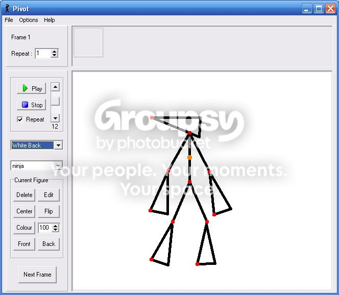

Download Ninja .stk file here for Pivot Stickfigure Animator 3.1 Beta


Dont got 3.1? Download it here
Download it here
Dont got 3.1?
Download it here Download it here .stk file?.stk is a Stick Figure File you use in the program Pivot Stickfigure Animator 3.1 beta:
ive never even heard of it
What type of pivot program do you need. I tried loading the .stk into Pivot Stick Animator 2.2.5 and it gave me a error.You have to download it to Pivot 3.1 beta
Yes, I'd like to see a screen shot. I used to do Pivot, but I got bored of it.
Looks Pretty Nice. Reminds me a lot of the N Poser.actually i got the idea from the n poser:
A took a Screen Shot as well.
